Thu, 01 Mar 2012 11:03:00 GMT
Un paseo en vídeo por el nuevo Windows 8
Un paseo en vídeo por el nuevo Windows 8
El nuevo Windows 8 ya se puede descargar en su versión beta. las novedades que trae respecto a lo que ha sido Windows hasta ahora son impresionantes, pero por mucho que tratemos de contaroslas no acabaríamos. Hemos pensado que lo mejor era enseñaros en un vídeo cómo es Windows 8, cómo se maneja, qué novedades aporta y qué pinta tiene la interfaz Metro de la que seguro que oirás mucho hablar a partir de ahora. Te aconsejamos visualizarlo a toda pantalla para recrearte mejor la vista.

El nuevo Windows 8 ya se puede descargar en su versión beta. las novedades que trae respecto a lo que ha sido Windows hasta ahora son impresionantes, pero por mucho que tratemos de contaroslas no acabaríamos.
Hemos pensado que lo mejor era enseñaros en un vídeo cómo es Windows 8, cómo se maneja, qué novedades aporta y qué pinta tiene la interfaz Metro de la que seguro que oirás mucho hablar a partir de ahora. Te aconsejamos visualizarlo a toda pantalla para recrearte mejor la vista.

Thu, 01 Mar 2012 09:51:08 GMT
Powermat WiCC. La carga inalámbrica universal un paso más cerca
Powermat WiCC. La carga inalámbrica universal un paso más cerca
Hasta ahora, los sistemas de carga inalámbrica dependían de forrar el móvil con una, en ocasiones incómoda, carcasa o de conectar el terminal a extraños módulos externos. Duracell se ha tomado muy en serio su idea de convertir los sistemas de carga inalámbricos en algo universal y para ello ha creado un nuevo sistema que podría revolucionar este sector, el Duracell WiCC. En lugar de una carcasa, el WiCC consiste en una tarjera extraplana que se adosa sobre la batería de cualquier móvil cuya carcasa pueda ser abierta. La tarjeta es apenas má sgruesa que una hoja de papel y raro será el terminal que no tenga algo de espacio libre para instalarla. Una vez cerrado, el teléfono queda preparado para cargarse en cualquier punto de carga compatible con Duracell Powermat. El único problema de Duracell WiCC es que necesita que los fabricantes adapten los puntos de contacto de sus terminales, aunque no se trata de una modificación muy complicada y Duracell, de hecho, ya está colaborando con marcas como RIM o Samsung para implantarlo en sus equipos. Duracell vende sus bases de carga para el mercado doméstico, pero su idea es que este tipo de puntos esten por todas partes. El año pasado ya vimos su idea de convertir las mesitas de las salas de espera de estaciones o aeropuertos en estaciones de carga en las que, con sólo posar el móvil, recibimos energía. Este año ya hemos podido ver puntos de carga para restaurantes, cafeterías… Duracell trabaja en una aplicación por geolocalización para poder encontrar el establecimiento más cercano en el que consumir algunos vatios. De momento los planes de Duracell parecen ambiciosos, pero es la compañía que más se está moviendo en este sentido y lo cierto es que una red de plataformas de carga públicas aliviaría mucho el actual problema con las baterías de nuestros gadgets. Más información | Duracell
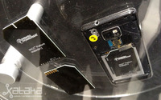
Hasta ahora, los sistemas de carga inalámbrica dependían de forrar el móvil con una, en ocasiones incómoda, carcasa o de conectar el terminal a extraños módulos externos. Duracell se ha tomado muy en serio su idea de convertir los sistemas de carga inalámbricos en algo universal y para ello ha creado un nuevo sistema que podría revolucionar este sector, el Duracell WiCC.
En lugar de una carcasa, el WiCC consiste en una tarjera extraplana que se adosa sobre la batería de cualquier móvil cuya carcasa pueda ser abierta. La tarjeta es apenas má sgruesa que una hoja de papel y raro será el terminal que no tenga algo de espacio libre para instalarla. Una vez cerrado, el teléfono queda preparado para cargarse en cualquier punto de carga compatible con Duracell Powermat.
El único problema de Duracell WiCC es que necesita que los fabricantes adapten los puntos de contacto de sus terminales, aunque no se trata de una modificación muy complicada y Duracell, de hecho, ya está colaborando con marcas como RIM o Samsung para implantarlo en sus equipos.
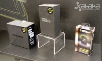
Duracell vende sus bases de carga para el mercado doméstico, pero su idea es que este tipo de puntos esten por todas partes. El año pasado ya vimos su idea de convertir las mesitas de las salas de espera de estaciones o aeropuertos en estaciones de carga en las que, con sólo posar el móvil, recibimos energía. Este año ya hemos podido ver puntos de carga para restaurantes, cafeterías… Duracell trabaja en una aplicación por geolocalización para poder encontrar el establecimiento más cercano en el que consumir algunos vatios.
De momento los planes de Duracell parecen ambiciosos, pero es la compañía que más se está moviendo en este sentido y lo cierto es que una red de plataformas de carga públicas aliviaría mucho el actual problema con las baterías de nuestros gadgets.
Más información | Duracell
Thu, 01 Mar 2012 08:51:40 GMT
Los bomberos del futuro visitan el Mobile World Congress
Los bomberos del futuro visitan el Mobile World Congress
Trajes de bomberos capaces de salvar la vida del que los lleva, ese es el objetivo de @Textil, un proyecto que está siendo desarrollado por Telefónica y la Generalitat de Catalunya y del que pudimos saber más en el Mobile World Congress. @Textil utiliza la tecnología Arduino para equipar con procesadores de bajo consumo y conectividad M2M (Machine to Machine) la casaca que forma parte del uniforme del cuerpo de Bomberos de Cataluña. Un conjunto de sensores instalados en los brazos que a simple vista parecen sólo un refuerzo de plástico se encargan de detectar hasta nueve tipos distintos de gases peligrosos. En caso de que se detecte alguna de estas sustancias en el aire en cantidad suficiente como para resultar nociva, los sensores envían una señal al al casco comunicado el propio bombero y a un centro de control específico. El sistema incluso puede grabar vídeo para ofrecer información adicional sobre la situación de un incendio. Aún no hay fecha para la implantación de esta tecnología pero es posible que sea en breve ya que el prototipo que hemos visto en la feria era completamente funcional. En el futuro, es posible que estos sensores y parecidos se incorporen al vestuario de otros cuerpos de seguridad y trabajadores expuestos a sustancias peligrosas. Más información | Telefónica

Trajes de bomberos capaces de salvar la vida del que los lleva, ese es el objetivo de @Textil, un proyecto que está siendo desarrollado por Telefónica y la Generalitat de Catalunya y del que pudimos saber más en el Mobile World Congress.
@Textil utiliza la tecnología Arduino para equipar con procesadores de bajo consumo y conectividad M2M (Machine to Machine) la casaca que forma parte del uniforme del cuerpo de Bomberos de Cataluña.
Un conjunto de sensores instalados en los brazos que a simple vista parecen sólo un refuerzo de plástico se encargan de detectar hasta nueve tipos distintos de gases peligrosos.
En caso de que se detecte alguna de estas sustancias en el aire en cantidad suficiente como para resultar nociva, los sensores envían una señal al al casco comunicado el propio bombero y a un centro de control específico. El sistema incluso puede grabar vídeo para ofrecer información adicional sobre la situación de un incendio.
Aún no hay fecha para la implantación de esta tecnología pero es posible que sea en breve ya que el prototipo que hemos visto en la feria era completamente funcional. En el futuro, es posible que estos sensores y parecidos se incorporen al vestuario de otros cuerpos de seguridad y trabajadores expuestos a sustancias peligrosas.
Más información | Telefónica
Thu, 01 Mar 2012 08:30:00 GMT
Windows 8, ruptura con el pasado pensando en el futuro
Windows 8, ruptura con el pasado pensando en el futuro
Así es el menú de inicio del nuevo Windows 8 Desde ayer la versión beta o previa de Windows 8 ya se puede descargar. Si quieres en Genbeta nos enseñan a instalarla en una máquina virtual. La presentación mundial la llevó a cabo Steven Sinofsky en Barcelona, dentro del marco del MWC 2012. ¿Casualidad? Ni mucho menos. Windows 8 es una ruptura total con el pasado, con la era del ordenador personal. Windows 8 es una apuesta de futuro, del dispositivo ubicuo, del dedo sobre la pantalla, del riesgo de apostar por hacer algo diferente. La computación ubicua En poco tiempo no podremos diferenciar los gadgets, equipos y tecnologías que nos rodean. Será algo indiferente para el consumidor, que solo querrá conectar y empezar a usar. O incluso sin conectar. Windows 8 es el paso que Microsoft da hacia esa forma de entender la tecnología que rodea al usuario. Es el sistema operativo de la computación ubicua y hacia esa idea irán en el futuro próximo los demás. Y hablo tanto de los que provienen del mundo del ordenador como los sistemas puramente móviles. La adopción de la interfaz Metro es una apuesta arriesgada, como lo fue en su día en Windows Phone. Pero ha sido un soplo de aire fresco que ha demostrado que todavía se puede innovar sin copiar. Las aplicaciones se renuevan para adaptarse a cualquier dispositivo. En Windows 8 la multipantalla es real Windows 8 ha sido pensado desde el inicio para usarse sin que tengamos que pensar en qué equipo está instalado. Puede funcionar en ordenadores de sobremesa clásicos, en ordenadores con pantalla táctil y también en tablets. Como parte de esa ubicuidad, la nube es parte interna del propio sistema operativo. Skydrive, las redes sociales o el streaming de contenido no son meras aplicaciones sino que se integran en el día a día de Windows 8. Sí, como en los teléfonos móviles. Interfaz directa y con integración invisible de la nube También de ellos se le pega la identificación e idea de perfil con almacén de archivos, aplicaciones y preferencias que podemos importar y exportar de forma sencilla de nuestros equipos con Windows 8. Y no nos olvidamos de la facilidad con la que podemos compartir contenido de forma integrada con el sistema. Las imágenes de servicios online como Facebook se integran en el sistema, y compartirlas es directo y sencillo Educando al consumidor La primera vez que probé Windows Phone lo tuve claro: es un sistema operativo perfecto para llevar el mundo de los smartphone a cualquier usuario, pero especialmente interesante para los que no quieren complicarse la vida ni tienen excesivos conocimientos. Conforme más usuarios van llegando al mundo de los smartphones, el uso que que se hace de ellos se estandariza más: redes sociales, correo, navegación web, mensajería … y aplicaciones, sí, pero no con tanta importancia como en otro nicho de mercado que ya estaba dentro de este mundo. Con Windows 8 y la interfaz Metro me ha pasado algo similar. El ordenador ya es un elemento más de ocio y entretenimiento en el hogar, además de trabajo. La mayoría de usuarios navega, accede a sus redes sociales, juega, disfruta de contenidos multimedia … y poco más. Además, los equipos, tanto ordenadores como tablets, se van enfocando completamente en lo táctil, en el uso de gestos y movimientos de dedos para manejarlos. Metro y la nueva pantalla de inicio de Windows 8 se aprovecha de ello. Y las aplicaciones que lleguen, como la de Wordpress, se adaptarán a su modelo. Aunque no hay problema en usarlo con el ratón y teclado, la nueva interfaz incita sobremanera a moverse por ella con gestos y toques de dedos Los paneles invitan a tocarlos y moverlos pero no es desagradable hacer clic en ellos o manejarse con el teclado. Las aplicaciones de vídeo, música y fotos recogen contenido de donde lo tenemos, no solo del ordenador, y todo está unificado en la forma de trabajar de Windows Phone. La ansiada interacción entre equipos de diferentes plataformas ha llegado con Windows 8. Un ejemplo es la posibilidad de enviar un vídeo que estamos reproduciendo en el ordenador o tablet con Windows 8 a una consola Xbox 360 de forma rápida, sencilla y transparente para cualquier usuario. También parte de los ajustes, la configuración de opciones en aplicaciones (olvidémonos de llamar programas a lo que instalamos en Windows 8) o las notificaciones e información en pantalla se heredan de Windows Phone. Otra vez una forma de trabajar que sirve para cualquier dispositivo de casa. Las dos formas de mirar Windows 8 se entienden muy bien Hay que arriesgarse El único punto negativo que le he visto de momento a Windows 8 es el riesgo que supone para Microsoft. El cambio en la idea de un sistema operativo es brutal, y puede costar que el consumidor se acostumbre a esta forma de trabajar. En el mercado de consumo el trauma será menor porque el usuario está acostumbrado a encontrarse Windows en su ordenador, y el nuevo Windows 8 facilita tareas cada vez más comunes, las hace más divertidas e incluso intuitivas en un mundo que se va acostumbrando a tocar más que a hacer clic. Pese a que mantiene el escritorio clásico con bastantes mejores que no se ven a simple vista, es en la empresa, en el trabajo, donde Metro puede chocar más. Las aplicaciones adaptadas a Metro son más simples, más directos, más del estilo del mundo de la telefonía móvil y los tablets, así que habrá que ver cómo convencen a este nicho que curiosamente siempre ha sido un gran apoyo para el sistema operativo de Microsoft. ¿Estamos en un ordenador o en un teléfono móvil?
 Así es el menú de inicio del nuevo Windows 8
Así es el menú de inicio del nuevo Windows 8 Desde ayer la versión beta o previa de Windows 8 ya se puede descargar. Si quieres en Genbeta nos enseñan a instalarla en una máquina virtual.
La presentación mundial la llevó a cabo Steven Sinofsky en Barcelona, dentro del marco del MWC 2012. ¿Casualidad? Ni mucho menos.
Windows 8 es una ruptura total con el pasado, con la era del ordenador personal. Windows 8 es una apuesta de futuro, del dispositivo ubicuo, del dedo sobre la pantalla, del riesgo de apostar por hacer algo diferente.
La computación ubicua
En poco tiempo no podremos diferenciar los gadgets, equipos y tecnologías que nos rodean. Será algo indiferente para el consumidor, que solo querrá conectar y empezar a usar. O incluso sin conectar.
Windows 8 es el paso que Microsoft da hacia esa forma de entender la tecnología que rodea al usuario. Es el sistema operativo de la computación ubicua y hacia esa idea irán en el futuro próximo los demás. Y hablo tanto de los que provienen del mundo del ordenador como los sistemas puramente móviles.
La adopción de la interfaz Metro es una apuesta arriesgada, como lo fue en su día en Windows Phone. Pero ha sido un soplo de aire fresco que ha demostrado que todavía se puede innovar sin copiar.
 Las aplicaciones se renuevan para adaptarse a cualquier dispositivo. En Windows 8 la multipantalla es real
Las aplicaciones se renuevan para adaptarse a cualquier dispositivo. En Windows 8 la multipantalla es real Windows 8 ha sido pensado desde el inicio para usarse sin que tengamos que pensar en qué equipo está instalado. Puede funcionar en ordenadores de sobremesa clásicos, en ordenadores con pantalla táctil y también en tablets.
Como parte de esa ubicuidad, la nube es parte interna del propio sistema operativo. Skydrive, las redes sociales o el streaming de contenido no son meras aplicaciones sino que se integran en el día a día de Windows 8. Sí, como en los teléfonos móviles.
 Interfaz directa y con integración invisible de la nube
Interfaz directa y con integración invisible de la nube También de ellos se le pega la identificación e idea de perfil con almacén de archivos, aplicaciones y preferencias que podemos importar y exportar de forma sencilla de nuestros equipos con Windows 8. Y no nos olvidamos de la facilidad con la que podemos compartir contenido de forma integrada con el sistema.
 Las imágenes de servicios online como Facebook se integran en el sistema, y compartirlas es directo y sencillo
Las imágenes de servicios online como Facebook se integran en el sistema, y compartirlas es directo y sencillo Educando al consumidor
La primera vez que probé Windows Phone lo tuve claro: es un sistema operativo perfecto para llevar el mundo de los smartphone a cualquier usuario, pero especialmente interesante para los que no quieren complicarse la vida ni tienen excesivos conocimientos. Conforme más usuarios van llegando al mundo de los smartphones, el uso que que se hace de ellos se estandariza más: redes sociales, correo, navegación web, mensajería … y aplicaciones, sí, pero no con tanta importancia como en otro nicho de mercado que ya estaba dentro de este mundo.
Con Windows 8 y la interfaz Metro me ha pasado algo similar. El ordenador ya es un elemento más de ocio y entretenimiento en el hogar, además de trabajo. La mayoría de usuarios navega, accede a sus redes sociales, juega, disfruta de contenidos multimedia … y poco más. Además, los equipos, tanto ordenadores como tablets, se van enfocando completamente en lo táctil, en el uso de gestos y movimientos de dedos para manejarlos. Metro y la nueva pantalla de inicio de Windows 8 se aprovecha de ello. Y las aplicaciones que lleguen, como la de Wordpress, se adaptarán a su modelo.
 Aunque no hay problema en usarlo con el ratón y teclado, la nueva interfaz incita sobremanera a moverse por ella con gestos y toques de dedos
Aunque no hay problema en usarlo con el ratón y teclado, la nueva interfaz incita sobremanera a moverse por ella con gestos y toques de dedos Los paneles invitan a tocarlos y moverlos pero no es desagradable hacer clic en ellos o manejarse con el teclado. Las aplicaciones de vídeo, música y fotos recogen contenido de donde lo tenemos, no solo del ordenador, y todo está unificado en la forma de trabajar de Windows Phone. La ansiada interacción entre equipos de diferentes plataformas ha llegado con Windows 8. Un ejemplo es la posibilidad de enviar un vídeo que estamos reproduciendo en el ordenador o tablet con Windows 8 a una consola Xbox 360 de forma rápida, sencilla y transparente para cualquier usuario.
También parte de los ajustes, la configuración de opciones en aplicaciones (olvidémonos de llamar programas a lo que instalamos en Windows 8) o las notificaciones e información en pantalla se heredan de Windows Phone. Otra vez una forma de trabajar que sirve para cualquier dispositivo de casa.
 Las dos formas de mirar Windows 8 se entienden muy bien
Las dos formas de mirar Windows 8 se entienden muy bien Hay que arriesgarse
El único punto negativo que le he visto de momento a Windows 8 es el riesgo que supone para Microsoft. El cambio en la idea de un sistema operativo es brutal, y puede costar que el consumidor se acostumbre a esta forma de trabajar. En el mercado de consumo el trauma será menor porque el usuario está acostumbrado a encontrarse Windows en su ordenador, y el nuevo Windows 8 facilita tareas cada vez más comunes, las hace más divertidas e incluso intuitivas en un mundo que se va acostumbrando a tocar más que a hacer clic.
Pese a que mantiene el escritorio clásico con bastantes mejores que no se ven a simple vista, es en la empresa, en el trabajo, donde Metro puede chocar más. Las aplicaciones adaptadas a Metro son más simples, más directos, más del estilo del mundo de la telefonía móvil y los tablets, así que habrá que ver cómo convencen a este nicho que curiosamente siempre ha sido un gran apoyo para el sistema operativo de Microsoft.
 ¿Estamos en un ordenador o en un teléfono móvil?
¿Estamos en un ordenador o en un teléfono móvil?
Thu, 01 Mar 2012 06:07:00 GMT
Sony Xperia P y la tecnología WhiteMagic en vídeo
Sony Xperia P y la tecnología WhiteMagic en vídeo
Sony ha enseñado en este MWC 2012 todo su arsenal de teléfonos avanzados llamados a ocupar lugares destacados de los escaparates. El Sony Xperia P es un modelo que, además de por su diseño y prestaciones, hay que observarlo bien por la llamada tecnología WhiteMagic, un subpixel blanco que Sony añade a su pantalla para conseguir una mejor visualización en condiciones de luz complicadas. En el siguiente vídeo puedes observar la diferencia con un Xperia Arc son pantalla Bravia pero sin esa tecnología. La diferencia es más que considerable.

Sony ha enseñado en este MWC 2012 todo su arsenal de teléfonos avanzados llamados a ocupar lugares destacados de los escaparates.
El Sony Xperia P es un modelo que, además de por su diseño y prestaciones, hay que observarlo bien por la llamada tecnología WhiteMagic, un subpixel blanco que Sony añade a su pantalla para conseguir una mejor visualización en condiciones de luz complicadas.
En el siguiente vídeo puedes observar la diferencia con un Xperia Arc son pantalla Bravia pero sin esa tecnología. La diferencia es más que considerable.
Wed, 29 Feb 2012 17:47:41 GMT
Qualcomm propone Infografías de realidad aumentada y teléfonos más inteligentes
Qualcomm propone Infografías de realidad aumentada y teléfonos más inteligentes
Qualcomm hace un considerable esfuerzo por poner a disposición de fabricantes y programadores plataformas de desarrollo que permitan aprovechar toda la potencia de sus nuevas generaciones de procesadores. Desde el stand de la compañía en el Mobile World Congress hemos tenido oportunidad de conocer dos novedades muy interesantes a este respecto. La primera de estas novedades se denomina Wireless Reach, y es una inicitiva puesta en marcha junto a Fundación Vodafone y Fundación Aprocor para la integración social de personas con discapacidades mediante la realidad aumentada. Aún en una primera fase, esta iniciativa consiste en el uso de infografías animadas sobre una base de realidad aumentada como la que veis en este vídeo. El usuario simplemente sigue los pasos que se muestran en la pantalla del tablet para manipular una maquinaria sea del tipo que sea. En este caso se trata, para la demo, de una simple impresora. Más allá de resolver ciertas discapacidades, Wireless Reach también abre la puerta a toda una revolución en el mundo de las infografías o los manuales de uso. Telefonos inteligentes de verdad El segundo proyecto es una idea realmente sencilla, pero genial, que aprovecha las capacidades de cálculo de los Snapdragon. Aunque estamos acostumbrados a utilizar los denominados smartphones o teléfonos inteligentes, más de una vez estos dispositivos se nos antojan bastante idiotas en su manera de funcionar. Pongamos por ejemplo el uso de las redes inalámbricas. Si dejamos activa la conexión WiFi, cualquier Smartphone tiende a buscar las redes que tiene alrededor continuamente, lo que redunda en un mayor consumo de batería. De igual modo, por las noches el terminal tiende a seguir recibiendo actualizaciones, lo que puede llegar a interrumpirnos el sueño y seguir gastando energía inútilmente. Lo que hace la aplicación en la que está trabajando Qualcomm es analizar nuestro uso real del teléfono para gestionar de forma inteligente sus recursos. El programa analiza lo que hacemos con el teléfono cada día. Así, si por la noche no lo utilizamos mantiene el nivel de actualizaciones al mínimo. Sin embargo, cuando nos levantamos es una molestia tener que actualizar el correo electrónico o Twitter manualmente, así que el terminal chequea a qué hora hemos puesto la alarma y se descarga automáticamente nuevos mensajes unos minutos antes para que tengamos todo listo al levantarnos. Igualmente, si la aplicación de Qualcomm detecta que no estamos usando el móvil de manera sistemática a ciertas horas del día porque, por ejemplo, estamos de camino al trabajo, desasctiva la búsqueda de redes WiFi para optimizar el consumo energético. Aún es pronto para hablar de fechas respecto a este proyecto, pero está claro que el desarrollo de un software lógico y que se adapte a nuestras necesidades es tan importante como el más rápido de los procesadores Más información | Qualcomm
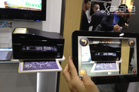
Qualcomm hace un considerable esfuerzo por poner a disposición de fabricantes y programadores plataformas de desarrollo que permitan aprovechar toda la potencia de sus nuevas generaciones de procesadores. Desde el stand de la compañía en el Mobile World Congress hemos tenido oportunidad de conocer dos novedades muy interesantes a este respecto.
La primera de estas novedades se denomina Wireless Reach, y es una inicitiva puesta en marcha junto a Fundación Vodafone y Fundación Aprocor para la integración social de personas con discapacidades mediante la realidad aumentada.
Aún en una primera fase, esta iniciativa consiste en el uso de infografías animadas sobre una base de realidad aumentada como la que veis en este vídeo. El usuario simplemente sigue los pasos que se muestran en la pantalla del tablet para manipular una maquinaria sea del tipo que sea. En este caso se trata, para la demo, de una simple impresora.
Más allá de resolver ciertas discapacidades, Wireless Reach también abre la puerta a toda una revolución en el mundo de las infografías o los manuales de uso.
Telefonos inteligentes de verdad
El segundo proyecto es una idea realmente sencilla, pero genial, que aprovecha las capacidades de cálculo de los Snapdragon. Aunque estamos acostumbrados a utilizar los denominados smartphones o teléfonos inteligentes, más de una vez estos dispositivos se nos antojan bastante idiotas en su manera de funcionar.
Pongamos por ejemplo el uso de las redes inalámbricas. Si dejamos activa la conexión WiFi, cualquier Smartphone tiende a buscar las redes que tiene alrededor continuamente, lo que redunda en un mayor consumo de batería.
De igual modo, por las noches el terminal tiende a seguir recibiendo actualizaciones, lo que puede llegar a interrumpirnos el sueño y seguir gastando energía inútilmente.
Lo que hace la aplicación en la que está trabajando Qualcomm es analizar nuestro uso real del teléfono para gestionar de forma inteligente sus recursos. El programa analiza lo que hacemos con el teléfono cada día. Así, si por la noche no lo utilizamos mantiene el nivel de actualizaciones al mínimo. Sin embargo, cuando nos levantamos es una molestia tener que actualizar el correo electrónico o Twitter manualmente, así que el terminal chequea a qué hora hemos puesto la alarma y se descarga automáticamente nuevos mensajes unos minutos antes para que tengamos todo listo al levantarnos.
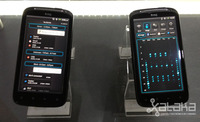
Igualmente, si la aplicación de Qualcomm detecta que no estamos usando el móvil de manera sistemática a ciertas horas del día porque, por ejemplo, estamos de camino al trabajo, desasctiva la búsqueda de redes WiFi para optimizar el consumo energético.
Aún es pronto para hablar de fechas respecto a este proyecto, pero está claro que el desarrollo de un software lógico y que se adapte a nuestras necesidades es tan importante como el más rápido de los procesadores
Más información | Qualcomm
Wed, 29 Feb 2012 15:03:00 GMT
El LG Optimus 3D se pasea delante nuestro
El LG Optimus 3D se pasea delante nuestro
LG vuelve a repetir aventura con un teléfono con pantalla 3D sin gafas y en este MWC 2012 está presumiendo de su reciente LG Optimus 3D Max. En Xataka nos hemos pasado por su stand en la feria y hemos grabado un vídeo para enseñarte de cerca cómo es y qué nos parece este nuevo teléfono 3D de LG.
%2013.36.07.png)
LG vuelve a repetir aventura con un teléfono con pantalla 3D sin gafas y en este MWC 2012 está presumiendo de su reciente LG Optimus 3D Max.
En Xataka nos hemos pasado por su stand en la feria y hemos grabado un vídeo para enseñarte de cerca cómo es y qué nos parece este nuevo teléfono 3D de LG.
Wed, 29 Feb 2012 13:30:15 GMT
Windows 8 Consumer Preview, te lo contamos desde su presentación
Windows 8 Consumer Preview, te lo contamos desde su presentación
Hoy es otro de los días grandes del MWC 2012. Lo protagoniza en exclusiva Microsoft, que no va a presentar un nuevo Windows Phone sino algo mas grande: Windows 8 Consumer Preview. Xataka estará presente en la puesta de largo de la “beta“ del gran próximo sistema operativo de los de Redmond, un llamativo salto hacia adelante y con enfoque multidispositivo que queremos conocer con detalles. Te lo estaremos contando todo en directo desde el Hotel Miramar en Barcelona a partir de las 15.00 horas en nuestra página de directos y en el canal de Twitter. En Genbeta | Windows 8 Consumer Preview: fecha de lanzamiento, imágenes filtradas, aplicaciones y juegos.
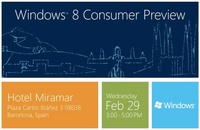
Hoy es otro de los días grandes del MWC 2012. Lo protagoniza en exclusiva Microsoft, que no va a presentar un nuevo Windows Phone sino algo mas grande: Windows 8 Consumer Preview.
Xataka estará presente en la puesta de largo de la “beta“ del gran próximo sistema operativo de los de Redmond, un llamativo salto hacia adelante y con enfoque multidispositivo que queremos conocer con detalles.
Te lo estaremos contando todo en directo desde el Hotel Miramar en Barcelona a partir de las 15.00 horas en nuestra página de directos y en el canal de Twitter.
En Genbeta | Windows 8 Consumer Preview: fecha de lanzamiento, imágenes filtradas, aplicaciones y juegos.
Wed, 29 Feb 2012 11:15:00 GMT
El equipo de Xataka en MWC 2012
El equipo de Xataka en MWC 2012
El MWC ya no es un evento cualquiera. La conectividad inunda todos los equipos, y la importancia en el día a día de los consumidores de los teléfonos y tablets no para de crecer. En Xataka comprobamos año tras año ese valor que los lectores dáis a la información del MWC, y por eso este año hemos realizado un esfuerzo extra para tener desplazado en Barcelona a un equipo de diez editores que trabajara en la cobertura que queríamos dar a encuentro tecnológico de esta magnitud en toda nuestra Galaxia: Xataka Móvil, Xataka Android, Genbeta … Coberturas en directo, entrevistas, tomas de contacto … Durante esto días os hemos traído las coberturas en directo de las presentaciones más destacadas tanto en Xataka, Xataka Móvil y Xataka Android (Nokia, HTC y Sony …) como en Genbeta (novedades de Facebook) También en Genbeta estamos hablando con los protagonistas más interesantes, como Paul Mockapetris (creador del DNS) o Rick Osterloh, director de producto y diseño de Skype. Y no podían faltar las tomas de contacto en Xataka de los nuevos modelos presentados, con especial interés en Xataka Android con los terminales más destacados con el sistema operativo de Google y todo lo que nos tenían que contar las operadoras en Xataka Móvil, donde recogemos las novedades en tarifas y servicios de Yoigo, Vodafone o Telefónica. Mucho protagonismo del vídeo Este año también teníamos muy claro que el vídeo tenía que ser protagonista de nuestra cobertura. Para ello nos hemos llevado a Barcelona a nuestro responsable Juan Polo, con el que hemos trabajado las entrevistas más interesante en vídeo a los protagonistas de este MWC 2012. Las iremos publicando en los próximos días. También en las tomas de contacto hemos usado las imágenes en movimiento para que sintáis lo más cerca posible los nuevos terminales. ¿No te haces una idea de cómo es el Nokia 808 Pureview con nuestro vídeo? Toda la actualidad al instante y completa Pero la cobertura que queríamos ofrecer no sería completa sin el trabajo de los editores de las cuevas. En Xataka hemos estado Kote y yo pasando por portada todas las novedades en profundidad, con todos los detalles de cada lanzamiento casi al mismo tiempo que eran presentados. Por eso conoces ya a fondo qué ofrece el Nokia 808 Pureview, el ASUS Padfone o los nuevos HTC One. Y en análisis de los protagonistas como Telefónica con su órdago al resto de operadores, el papel de Samsung en el MWC o el golpe de HTC en la feria no falta de la mano de Antonio Ortiz. Y no nos olvidemos de que también hemos estrenado diseño, con lo que hay también que agradecer el apoyo del equipo técnico. Los editores del equipo xatakero en MWC 2012 son Miguel López, Antonio Ortiz, Carlos Zahumenszky, Pablo Espeso (falta en las fotos), Susana Font, Pablo Ibañez, Yago Rosa, Juan Carlos González, Juan Polo y Damián García. Y no, la feria no ha terminado, seguimos trabajando para vosotros.

El MWC ya no es un evento cualquiera. La conectividad inunda todos los equipos, y la importancia en el día a día de los consumidores de los teléfonos y tablets no para de crecer.
En Xataka comprobamos año tras año ese valor que los lectores dáis a la información del MWC, y por eso este año hemos realizado un esfuerzo extra para tener desplazado en Barcelona a un equipo de diez editores que trabajara en la cobertura que queríamos dar a encuentro tecnológico de esta magnitud en toda nuestra Galaxia: Xataka Móvil, Xataka Android, Genbeta …
Coberturas en directo, entrevistas, tomas de contacto …
Durante esto días os hemos traído las coberturas en directo de las presentaciones más destacadas tanto en Xataka, Xataka Móvil y Xataka Android (Nokia, HTC y Sony …) como en Genbeta (novedades de Facebook)
También en Genbeta estamos hablando con los protagonistas más interesantes, como Paul Mockapetris (creador del DNS) o Rick Osterloh, director de producto y diseño de Skype.
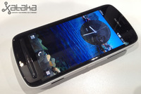
Y no podían faltar las tomas de contacto en Xataka de los nuevos modelos presentados, con especial interés en Xataka Android con los terminales más destacados con el sistema operativo de Google y todo lo que nos tenían que contar las operadoras en Xataka Móvil, donde recogemos las novedades en tarifas y servicios de Yoigo, Vodafone o Telefónica.
Mucho protagonismo del vídeo
Este año también teníamos muy claro que el vídeo tenía que ser protagonista de nuestra cobertura. Para ello nos hemos llevado a Barcelona a nuestro responsable Juan Polo, con el que hemos trabajado las entrevistas más interesante en vídeo a los protagonistas de este MWC 2012. Las iremos publicando en los próximos días.
También en las tomas de contacto hemos usado las imágenes en movimiento para que sintáis lo más cerca posible los nuevos terminales. ¿No te haces una idea de cómo es el Nokia 808 Pureview con nuestro vídeo?
Toda la actualidad al instante y completa
Pero la cobertura que queríamos ofrecer no sería completa sin el trabajo de los editores de las cuevas. En Xataka hemos estado Kote y yo pasando por portada todas las novedades en profundidad, con todos los detalles de cada lanzamiento casi al mismo tiempo que eran presentados.
Por eso conoces ya a fondo qué ofrece el Nokia 808 Pureview, el ASUS Padfone o los nuevos HTC One.
Y en análisis de los protagonistas como Telefónica con su órdago al resto de operadores, el papel de Samsung en el MWC o el golpe de HTC en la feria no falta de la mano de Antonio Ortiz.
Y no nos olvidemos de que también hemos estrenado diseño, con lo que hay también que agradecer el apoyo del equipo técnico.

Los editores del equipo xatakero en MWC 2012 son Miguel López, Antonio Ortiz, Carlos Zahumenszky, Pablo Espeso (falta en las fotos), Susana Font, Pablo Ibañez, Yago Rosa, Juan Carlos González, Juan Polo y Damián García.
Y no, la feria no ha terminado, seguimos trabajando para vosotros.
Wed, 29 Feb 2012 09:31:00 GMT
Windows 8 en un tablet ViewSonic, te lo enseñamos en vídeo
Windows 8 en un tablet ViewSonic, te lo enseñamos en vídeo
ViewSonic no tiene todavía el nombre de otras marcas punteras en el mundo de los tablets, pero ha aterrizado en Barcelona con un arsenal de nuevos modelos y algún que otro prototipo más que interesante. En el vídeo que hemos grabado en el MWC puedes ver precisamente un modelo de 10 pulgadas funcionando bajo Windows 8. No es más que una versión preliminar pero nos puede dar una idea de las posibilidades del próximo sistema operativo de Microsoft en el formato tablet.
%2017.19.48.jpg)
ViewSonic no tiene todavía el nombre de otras marcas punteras en el mundo de los tablets, pero ha aterrizado en Barcelona con un arsenal de nuevos modelos y algún que otro prototipo más que interesante.
En el vídeo que hemos grabado en el MWC puedes ver precisamente un modelo de 10 pulgadas funcionando bajo Windows 8. No es más que una versión preliminar pero nos puede dar una idea de las posibilidades del próximo sistema operativo de Microsoft en el formato tablet.
Wed, 29 Feb 2012 08:05:00 GMT
Samsung Galaxy Note 10.1, primeras impresiones
Samsung Galaxy Note 10.1, primeras impresiones
Existiendo ya un dispositivo similar algo más pequeño, el nuevo Samsung Galaxy Note 10.1 se presenta en el mercado con un objetivo un tanto incierto. Es cierto que es un tablet similar en potencia a lo ofrecido por el Galaxy Tab 2, también de 10.1. Las diferencias hardware se centran principalmente en que el Note tiene funciones de teléfono, mientras que el Tab se ciñe exclusivamente a la definición de tablet puro. Sí, Samsung Galaxy Note 10.1 sirve para llamar por teléfono, pero está claro que ese no es uno de sus atractivos. En nuestra primera toma de contacto nos ha encantado el uso del S-Pen, que a pesar de ser similar al del Note de 5.3 pulgadas se disfruta mucho más gracias a la mayor pantalla. Las aplicaciones y posibilidades que brinda este accesorio os sorprenderán: múltiples niveles de presión, reconocimiento de texto escrito a mano, altísima precisión, cierta integración con Wolfram Alpha, reconocimiento de figuras geométricas… Samsung Galaxy Note 10.1, con S-Pen Quizá lo que más me ha llamado la atención del Samsung Galaxy Note 10.1 sea que es un tablet orientado a diseño. Es preciso, responde correctamente y lo más importante: trae una serie de aplicaciones específicas muy diferentes de lo ofertado por la competencia, centradas precisamente en tratar aspectos más cercanos a diseñadores que a usuarios comunes. En esta toma de contacto me ha sorprendido muy gratamente, llegando a recordarme a algunas tabletas de tipo Wacom en algunos momentos puntuales. Existen diferencias entre ellas, pero a día de hoy pocos tablets se acercan tanto al mundo del diseño. Galería de fotos (Haz click en una imagen para ampliarla)
En Xataka | Samsung Galaxy Note 10.1.
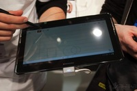
Existiendo ya un dispositivo similar algo más pequeño, el nuevo Samsung Galaxy Note 10.1 se presenta en el mercado con un objetivo un tanto incierto. Es cierto que es un tablet similar en potencia a lo ofrecido por el Galaxy Tab 2, también de 10.1. Las diferencias hardware se centran principalmente en que el Note tiene funciones de teléfono, mientras que el Tab se ciñe exclusivamente a la definición de tablet puro.
Sí, Samsung Galaxy Note 10.1 sirve para llamar por teléfono, pero está claro que ese no es uno de sus atractivos. En nuestra primera toma de contacto nos ha encantado el uso del S-Pen, que a pesar de ser similar al del Note de 5.3 pulgadas se disfruta mucho más gracias a la mayor pantalla. Las aplicaciones y posibilidades que brinda este accesorio os sorprenderán: múltiples niveles de presión, reconocimiento de texto escrito a mano, altísima precisión, cierta integración con Wolfram Alpha, reconocimiento de figuras geométricas…
Samsung Galaxy Note 10.1, con S-Pen
Quizá lo que más me ha llamado la atención del Samsung Galaxy Note 10.1 sea que es un tablet orientado a diseño. Es preciso, responde correctamente y lo más importante: trae una serie de aplicaciones específicas muy diferentes de lo ofertado por la competencia, centradas precisamente en tratar aspectos más cercanos a diseñadores que a usuarios comunes.
En esta toma de contacto me ha sorprendido muy gratamente, llegando a recordarme a algunas tabletas de tipo Wacom en algunos momentos puntuales. Existen diferencias entre ellas, pero a día de hoy pocos tablets se acercan tanto al mundo del diseño.
Galería de fotos
(Haz click en una imagen para ampliarla)
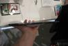
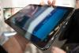
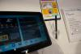
En Xataka | Samsung Galaxy Note 10.1.
Wed, 29 Feb 2012 06:34:00 GMT
MWC 2012, día 2: toma nota de lo que pasó
MWC 2012, día 2: toma nota de lo que pasó
Llegamos ya al tercer día del MWC 2012 y aunque con menos novedades que el primer día, es probable que te hayas dejado algo por el camino. Si es así, te animamos a recordar lo más destacado del día dos del MWC.
Analizamos la situación que se presenta tras la bomba de Movistar. ¿Sólo de humo?
El ASUS Transformer Infinity inicia una nueva carrera en el mundo de los tablets.
Samsung no ha tenido la repercusión de otros MWC pero seguro que ha tomado nota de su situación.
El Sony Xperia P pasa por nuestras manos.
El ASUS Padfone está llamado a ser uno de los cinco teléfono importantes de este MWC 2012.
No es un teléfono pero el Galaxy Note 10.1 se lleva muchas de las fotos de esta feria.
ZTE es el gran tapado de este MWC y el ZTE Era, su gran apuesta.
Aunque ya lo conocíamos, el Nokia Lumia 900 se destapa para Europa estos días. No te separes de la pantalla porque seguimos con nuestra cobertura.

Llegamos ya al tercer día del MWC 2012 y aunque con menos novedades que el primer día, es probable que te hayas dejado algo por el camino.
Si es así, te animamos a recordar lo más destacado del día dos del MWC.
- Analizamos la situación que se presenta tras la bomba de Movistar. ¿Sólo de humo?
- El ASUS Transformer Infinity inicia una nueva carrera en el mundo de los tablets.
- Samsung no ha tenido la repercusión de otros MWC pero seguro que ha tomado nota de su situación.
- El Sony Xperia P pasa por nuestras manos.
- El ASUS Padfone está llamado a ser uno de los cinco teléfono importantes de este MWC 2012.
- No es un teléfono pero el Galaxy Note 10.1 se lleva muchas de las fotos de esta feria.
-
ZTE es el gran tapado de este MWC y el ZTE Era, su gran apuesta.
- Aunque ya lo conocíamos, el Nokia Lumia 900 se destapa para Europa estos días.
No te separes de la pantalla porque seguimos con nuestra cobertura.
Tue, 28 Feb 2012 16:51:06 GMT
iPad 3 será presentado la semana que viene, es oficial
iPad 3 será presentado la semana que viene, es oficial
Actualización
A los pocos minutos de publicar la noticia, nos llega la confirmación de que es oficial. A medios americanos les está llegando la invitación para un evento en el que se presentará el iPad 3 o iPad HD, o como quiera que lo terminen llamando.
Tendrá lugar en el edificio Yerba Buena Center, en San Francisco, el próximo siete de marzo, miércoles. ¿Nos ayudáis a sacar pistas de la imagen? ¿más definición? ¿no hay botón home?
Con ganas de aguar la fiesta a los fabricantes presentes en el Mobile World Congress, Apple aparece en medio de las miles de noticias del evento, sin estar en él. El medio norteamericano CNBC asegura que la semana que viene la empresa de Cupertino presentará su esperado iPad 3. Lo hace desde twitter, y se atreve a dar detalles sobre el dispositivo y la presentación, algunos más acertados que otros, ya que otros medios se han encargado de confirmar que no será en Nueva York. Otro dato que sueltan es el de los núcleos en el procesador, el doble que en el modelo actual (quad core), algo que ya esperamos, y que no nos sorprende teniendo en cuenta que la competencia los está metiendo hasta en teléfonos, como estamos comprobando en la feria de Barcelona. La siguiente especificación, y es que el tweet da para mucho, es que contará con conectividad LTE, algo también esperable teniendo en cuenta las redes que están estrenando las operadoras americanas. Vía | CNBC | The Verge

Actualización
A los pocos minutos de publicar la noticia, nos llega la confirmación de que es oficial. A medios americanos les está llegando la invitación para un evento en el que se presentará el iPad 3 o iPad HD, o como quiera que lo terminen llamando.
Tendrá lugar en el edificio Yerba Buena Center, en San Francisco, el próximo siete de marzo, miércoles. ¿Nos ayudáis a sacar pistas de la imagen? ¿más definición? ¿no hay botón home?
Con ganas de aguar la fiesta a los fabricantes presentes en el Mobile World Congress, Apple aparece en medio de las miles de noticias del evento, sin estar en él. El medio norteamericano CNBC asegura que la semana que viene la empresa de Cupertino presentará su esperado iPad 3.
Lo hace desde twitter, y se atreve a dar detalles sobre el dispositivo y la presentación, algunos más acertados que otros, ya que otros medios se han encargado de confirmar que no será en Nueva York.
Otro dato que sueltan es el de los núcleos en el procesador, el doble que en el modelo actual (quad core), algo que ya esperamos, y que no nos sorprende teniendo en cuenta que la competencia los está metiendo hasta en teléfonos, como estamos comprobando en la feria de Barcelona.
La siguiente especificación, y es que el tweet da para mucho, es que contará con conectividad LTE, algo también esperable teniendo en cuenta las redes que están estrenando las operadoras americanas.
Vía | CNBC | The Verge
Thu, 01 Mar 2012 10:43:28 GMT
"Queremos dar una experiencia de usuario buena en cualquier condición", entrevista a Brice Crabbe de Microsoft
"Queremos dar una experiencia de usuario buena en cualquier condición", entrevista a Brice Crabbe de Microsoft
Microsoft ha sido una de las protagonistas de este MWC 2012 principalmente por el lanzamiento de Windows 8 más que por Windows Phone. Brice Crabbe, de Microsoft Iberia, nos atendió para tres preguntas directas en nuestra serie de entrevistas en vídeo a los protagonistas de Barcelona estos días. Con Windows Phone como eje central, en Xataka le preguntamos a Brice Crabbe sobre el estado actual del sistema operativo para móviles de Microsoft, especialmente en cuanto a la experiencia de usuario en terminales de entrada, donde el Nokia Lumia 610 tiene una importancia mayúscula para ellos. No te pierdas sus contestaciones.
%2016.30.00.jpg)
Microsoft ha sido una de las protagonistas de este MWC 2012 principalmente por el lanzamiento de Windows 8 más que por Windows Phone. Brice Crabbe, de Microsoft Iberia, nos atendió para tres preguntas directas en nuestra serie de entrevistas en vídeo a los protagonistas de Barcelona estos días.
Con Windows Phone como eje central, en Xataka le preguntamos a Brice Crabbe sobre el estado actual del sistema operativo para móviles de Microsoft, especialmente en cuanto a la experiencia de usuario en terminales de entrada, donde el Nokia Lumia 610 tiene una importancia mayúscula para ellos. No te pierdas sus contestaciones.
Thu, 01 Mar 2012 09:20:00 GMT
Sony Xperia U, te lo enseñamos en vídeo
Sony Xperia U, te lo enseñamos en vídeo
El segundo teléfono destacado de Sony para este MWC 2012 es el Sony Xperia U. Compacto, con pantalla de 3.5 pulgadas y un diseño que se adorna con la zona inferior intercambiable. En este vídeo del MWC te enseñamos cómo es su diseño, especialmente en esa parte de su cuerpo tan curioso.
%2022.24.48.jpg)
El segundo teléfono destacado de Sony para este MWC 2012 es el Sony Xperia U.
Compacto, con pantalla de 3.5 pulgadas y un diseño que se adorna con la zona inferior intercambiable. En este vídeo del MWC te enseñamos cómo es su diseño, especialmente en esa parte de su cuerpo tan curioso.
Thu, 01 Mar 2012 08:30:00 GMT
Windows 8, ruptura con el pasado pensando en el futuro
Windows 8, ruptura con el pasado pensando en el futuro
Desde ayer la versión beta o previa de Windows 8 ya se puede descargar. Si quieres en Genbeta nos enseñan a instalarla en una máquina virtual. La presentación mundial la llevó a cabo Steven Sinofsky en Barcelona, dentro del marco del MWC 2012. ¿Casualidad? Ni mucho menos. Windows 8 es una ruptura total con el pasado, con la era del ordenador personal. Windows 8 es una apuesta de futuro, del dispositivo ubicuo, del dedo sobre la pantalla, del riesgo de apostar por hacer algo diferente. La computación ubicua En poco tiempo no podremos diferenciar los gadgets, equipos y tecnologías que nos rodean. Será algo indiferente para el consumidor, que solo querrá conectar y empezar a usar. O incluso sin conectar. Windows 8 es el paso que Microsoft da hacia esa forma de entender la tecnología que rodea al usuario. Es el sistema operativo de la computación ubicua y hacia esa idea irán en el futuro próximo los demás. Y hablo tanto de los que provienen del mundo del ordenador como los sistemas puramente móviles. La adopción de la interfaz Metro es una apuesta arriesgada, como lo fue en su día en Windows Phone. Pero ha sido un soplo de aire fresco que ha demostrado que todavía se puede innovar sin copiar. Las aplicaciones se renuevan para adaptarse a cualquier dispositivo. En Windows 8 la multipantalla es real Windows 8 ha sido pensado desde el inicio para usarse sin que tengamos que pensar en qué equipo está instalado. Puede funcionar en ordenadores de sobremesa clásicos, en ordenadores con pantalla táctil y también en tablets. Como parte de esa ubicuidad, la nube es parte interna del propio sistema operativo. Skydrive, las redes sociales o el streaming de contenido no son meras aplicaciones sino que se integran en el día a día de Windows 8. Sí, como en los teléfonos móviles. Interfaz directa y con integración invisible de la nube También de ellos se le pega la identificación e idea de perfil con almacén de archivos, aplicaciones y preferencias que podemos importar y exportar de forma sencilla de nuestros equipos con Windows 8. Y no nos olvidamos de la facilidad con la que podemos compartir contenido de forma integrada con el sistema. Las imágenes de servicios online como Facebook se integran en el sistema, y compartirlas es directo y sencillo Educando al consumidor La primera vez que probé Windows Phone lo tuve claro: es un sistema operativo perfecto para llevar el mundo de los smartphone a cualquier usuario, pero especialmente interesante para los que no quieren complicarse la vida ni tienen excesivos conocimientos. Conforme más usuarios van llegando al mundo de los smartphones, el uso que que se hace de ellos se estandariza más: redes sociales, correo, navegación web, mensajería … y aplicaciones, sí, pero no con tanta importancia como en otro nicho de mercado que ya estaba dentro de este mundo. Con Windows 8 y la interfaz Metro me ha pasado algo similar. El ordenador ya es un elemento más de ocio y entretenimiento en el hogar, además de trabajo. La mayoría de usuarios navega, accede a sus redes sociales, juega, disfruta de contenidos multimedia … y poco más. Además, los equipos, tanto ordenadores como tablets, se van enfocando completamente en lo táctil, en el uso de gestos y movimientos de dedos para manejarlos. Metro y la nueva pantalla de inicio de Windows 8 se aprovecha de ello. Y las aplicaciones que lleguen, como la de Wordpress, se adaptarán a su modelo. Aunque no hay problema en usarlo con el ratón y teclado, la nueva interfaz incita sobremanera a moverse por ella con gestos y toques de dedos Los paneles invitan a tocarlos y moverlos pero no es desagradable hacer clic en ellos o manejarse con el teclado. Las aplicaciones de vídeo, música y fotos recogen contenido de donde lo tenemos, no solo del ordenador, y todo está unificado en la forma de trabajar de Windows Phone. La ansiada interacción entre equipos de diferentes plataformas ha llegado con Windows 8. Un ejemplo es la posibilidad de enviar un vídeo que estamos reproduciendo en el ordenador o tablet con Windows 8 a una consola Xbox 360 de forma rápida, sencilla y transparente para cualquier usuario. También parte de los ajustes, la configuración de opciones en aplicaciones (olvidémonos de llamar programas a lo que instalamos en Windows 8) o las notificaciones e información en pantalla se heredan de Windows Phone. Otra vez una forma de trabajar que sirve para cualquier dispositivo de casa. Las dos formas de mirar Windows 8 se entienden muy bien Hay que arriesgarse El único punto negativo que le he visto de momento a Windows 8 es el riesgo que supone para Microsoft. El cambio en la idea de un sistema operativo es brutal, y puede costar que el consumidor se acostumbre a esta forma de trabajar. En el mercado de consumo el trauma será menor porque el usuario está acostumbrado a encontrarse Windows en su ordenador, y el nuevo Windows 8 facilita tareas cada vez más comunes, las hace más divertidas e incluso intuitivas en un mundo que se va acostumbrando a tocar más que a hacer clic. Pese a que mantiene el escritorio clásico con bastantes mejores que no se ven a simple vista, es en la empresa, en el trabajo, donde Metro puede chocar más. Las aplicaciones adaptadas a Metro son más simples, más directos, más del estilo del mundo de la telefonía móvil y los tablets, así que habrá que ver cómo convencen a este nicho que curiosamente siempre ha sido un gran apoyo para el sistema operativo de Microsoft. ¿Estamos en un ordenador o en un teléfono móvil?
Desde ayer la versión beta o previa de Windows 8 ya se puede descargar. Si quieres en Genbeta nos enseñan a instalarla en una máquina virtual.
La presentación mundial la llevó a cabo Steven Sinofsky en Barcelona, dentro del marco del MWC 2012. ¿Casualidad? Ni mucho menos. Windows 8 es una ruptura total con el pasado, con la era del ordenador personal. Windows 8 es una apuesta de futuro, del dispositivo ubicuo, del dedo sobre la pantalla, del riesgo de apostar por hacer algo diferente.
La computación ubicua
En poco tiempo no podremos diferenciar los gadgets, equipos y tecnologías que nos rodean. Será algo indiferente para el consumidor, que solo querrá conectar y empezar a usar. O incluso sin conectar.
Windows 8 es el paso que Microsoft da hacia esa forma de entender la tecnología que rodea al usuario. Es el sistema operativo de la computación ubicua y hacia esa idea irán en el futuro próximo los demás. Y hablo tanto de los que provienen del mundo del ordenador como los sistemas puramente móviles.
La adopción de la interfaz Metro es una apuesta arriesgada, como lo fue en su día en Windows Phone. Pero ha sido un soplo de aire fresco que ha demostrado que todavía se puede innovar sin copiar.
Las aplicaciones se renuevan para adaptarse a cualquier dispositivo. En Windows 8 la multipantalla es real Windows 8 ha sido pensado desde el inicio para usarse sin que tengamos que pensar en qué equipo está instalado. Puede funcionar en ordenadores de sobremesa clásicos, en ordenadores con pantalla táctil y también en tablets.
Como parte de esa ubicuidad, la nube es parte interna del propio sistema operativo. Skydrive, las redes sociales o el streaming de contenido no son meras aplicaciones sino que se integran en el día a día de Windows 8. Sí, como en los teléfonos móviles.
Interfaz directa y con integración invisible de la nube También de ellos se le pega la identificación e idea de perfil con almacén de archivos, aplicaciones y preferencias que podemos importar y exportar de forma sencilla de nuestros equipos con Windows 8. Y no nos olvidamos de la facilidad con la que podemos compartir contenido de forma integrada con el sistema.
Las imágenes de servicios online como Facebook se integran en el sistema, y compartirlas es directo y sencillo Educando al consumidor
La primera vez que probé Windows Phone lo tuve claro: es un sistema operativo perfecto para llevar el mundo de los smartphone a cualquier usuario, pero especialmente interesante para los que no quieren complicarse la vida ni tienen excesivos conocimientos. Conforme más usuarios van llegando al mundo de los smartphones, el uso que que se hace de ellos se estandariza más: redes sociales, correo, navegación web, mensajería … y aplicaciones, sí, pero no con tanta importancia como en otro nicho de mercado que ya estaba dentro de este mundo.
Con Windows 8 y la interfaz Metro me ha pasado algo similar. El ordenador ya es un elemento más de ocio y entretenimiento en el hogar, además de trabajo. La mayoría de usuarios navega, accede a sus redes sociales, juega, disfruta de contenidos multimedia … y poco más. Además, los equipos, tanto ordenadores como tablets, se van enfocando completamente en lo táctil, en el uso de gestos y movimientos de dedos para manejarlos. Metro y la nueva pantalla de inicio de Windows 8 se aprovecha de ello. Y las aplicaciones que lleguen, como la de Wordpress, se adaptarán a su modelo.
Aunque no hay problema en usarlo con el ratón y teclado, la nueva interfaz incita sobremanera a moverse por ella con gestos y toques de dedos Los paneles invitan a tocarlos y moverlos pero no es desagradable hacer clic en ellos o manejarse con el teclado. Las aplicaciones de vídeo, música y fotos recogen contenido de donde lo tenemos, no solo del ordenador, y todo está unificado en la forma de trabajar de Windows Phone. La ansiada interacción entre equipos de diferentes plataformas ha llegado con Windows 8. Un ejemplo es la posibilidad de enviar un vídeo que estamos reproduciendo en el ordenador o tablet con Windows 8 a una consola Xbox 360 de forma rápida, sencilla y transparente para cualquier usuario.
También parte de los ajustes, la configuración de opciones en aplicaciones (olvidémonos de llamar programas a lo que instalamos en Windows 8) o las notificaciones e información en pantalla se heredan de Windows Phone. Otra vez una forma de trabajar que sirve para cualquier dispositivo de casa.
Las dos formas de mirar Windows 8 se entienden muy bien Hay que arriesgarse
El único punto negativo que le he visto de momento a Windows 8 es el riesgo que supone para Microsoft. El cambio en la idea de un sistema operativo es brutal, y puede costar que el consumidor se acostumbre a esta forma de trabajar. En el mercado de consumo el trauma será menor porque el usuario está acostumbrado a encontrarse Windows en su ordenador, y el nuevo Windows 8 facilita tareas cada vez más comunes, las hace más divertidas e incluso intuitivas en un mundo que se va acostumbrando a tocar más que a hacer clic.
Pese a que mantiene el escritorio clásico con bastantes mejores que no se ven a simple vista, es en la empresa, en el trabajo, donde Metro puede chocar más. Las aplicaciones adaptadas a Metro son más simples, más directos, más del estilo del mundo de la telefonía móvil y los tablets, así que habrá que ver cómo convencen a este nicho que curiosamente siempre ha sido un gran apoyo para el sistema operativo de Microsoft.
¿Estamos en un ordenador o en un teléfono móvil?
Thu, 01 Mar 2012 08:00:00 GMT
"La tecnología Pureview del Nokia 808 irá a todos los smartphones de Nokia", entrevista a Javier García de Nokia
"La tecnología Pureview del Nokia 808 irá a todos los smartphones de Nokia", entrevista a Javier García de Nokia
Arrancamos la serie de entrevistas en vídeo a los protagonistas del MWC 2012 con Javier García de Nokia, que desde el stand de la compañía contesta a nuestras tres preguntas. ¿Curiosidad por saber por qué el Nokia 808 PureView salió con Symbian y no con Windows Phone? ¿Qué papel juega Nokia ahora con Windows Phone? ¿Qué tendencias se impondrán tras este MWC? Sal de dudas con las respuestas de Javier García de Nokia.
%2015.54.56.jpg)
Arrancamos la serie de entrevistas en vídeo a los protagonistas del MWC 2012 con Javier García de Nokia, que desde el stand de la compañía contesta a nuestras tres preguntas.
¿Curiosidad por saber por qué el Nokia 808 PureView salió con Symbian y no con Windows Phone? ¿Qué papel juega Nokia ahora con Windows Phone? ¿Qué tendencias se impondrán tras este MWC? Sal de dudas con las respuestas de Javier García de Nokia.
Wed, 29 Feb 2012 18:00:00 GMT
HTC One S. Toma de contacto
HTC One S. Toma de contacto
Continuamos con nuestra aventura en el Mobile World Congress. Esta vez, le toca el turno al HTC One S. Un terminal que durante la presentación del domingo no tuvimos la oportunidad de probar tranquilamente. Ahora, en la relativa calma que da la feria de Barcelona, hemos podido comprobar mejor qué es lo que ofrece este terminal. Peter Chou, además de explicar las cinco claves de sus nuevos modelos, hizo hincapié en trasladar la misma experiencia de One a diferentes tipos de terminales. Evidentemente las diferencias entre ellos, a nivel de hardware, son obvias pero tal y como hemos podido comprobar este HTC One S es un terminal muy interesante y algo más accesible. Como ya sabéis, este año HTC apostará de nuevo por los unibody pero el metal dará paso al policarbonato en esta ocasión. El diseño, conservador, no nos depara grandes novedades a simple vista pero una vez cogemos el terminal vemos que la evolución es notable. Los material del HTC One S, al igual que su hermano mayor el X, son suaves al tacto. De nuevo, nos vemos sorprendido por el peso, 119.5 gramos, para el tamaño que tiene este terminal se nos hace muy ligero. La pantalla por su parte es un poco más pequeña pero la tecnología es la misma: Super AMOLED. En cuanto al procesador este modelo contará con un dual core a 1,5GHz. No tiene tanta potencia como el X pero su rendimiento en el rato que hemos estado con él ha sido excelente. También contará con la capa de personalización HTC Sense 4.0. Aunque aspectualmente es bastante agradable, no termina de convencerme respecto a Ice Cream Sandwich sin modificaciones de por medio. Otro de los puntos fuertes de toda la gama One es la cámara. El S lleva la misma cámara que el X y por tanto la calidad de las fotos es realmente buena. Aquí, podéis ver una fotografía de muestra para que veáis su calidad. Una función que nos ha gustado mucho ha sido la velocidad en ráfaga. Cuando estamos haciendo una foto con dejar pulsado el botón de disparo empezará a hacer una foto detrás de otra. Todo ello a una velocidad de 0,7 segundos por disparo. Una vez hemos hecho las fotografías se nos mostrará en un carrusel todas las instantáneas. A partir de ahí tenemos dos opciones: que el terminal elija automáticamente la mejor o hacerlo nosotros de forma automática. Además de la cámara su otro punto fuerte será la música. Siguiendo la estela del HTC Sensation XL volveremos a tener un chip para procesar la música de forma paralela. La diferencia entre utilizar o no Beats (se puede activar y desactivar a placer) es notable, especialmente en la línea de bajos. HTC One S, así como el resto de la familia, saldrá a la venta el próximo mes de abril a un precio todavía por determinar. La primera impresión ha sido bastante buena. Por tamaño, es un dispositivo ideal para quienes las casi cinco pulgadas que tiene el HTC One X se le antojen un poco grandes. Comparativa de tamaño entre el HTC One S y el HTC One X. En Xataka | HTC One X, primeras impresiones (con vídeo)
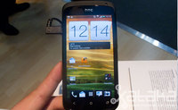
Continuamos con nuestra aventura en el Mobile World Congress. Esta vez, le toca el turno al HTC One S. Un terminal que durante la presentación del domingo no tuvimos la oportunidad de probar tranquilamente. Ahora, en la relativa calma que da la feria de Barcelona, hemos podido comprobar mejor qué es lo que ofrece este terminal.
Peter Chou, además de explicar las cinco claves de sus nuevos modelos, hizo hincapié en trasladar la misma experiencia de One a diferentes tipos de terminales. Evidentemente las diferencias entre ellos, a nivel de hardware, son obvias pero tal y como hemos podido comprobar este HTC One S es un terminal muy interesante y algo más accesible.
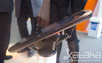
Como ya sabéis, este año HTC apostará de nuevo por los unibody pero el metal dará paso al policarbonato en esta ocasión. El diseño, conservador, no nos depara grandes novedades a simple vista pero una vez cogemos el terminal vemos que la evolución es notable.
Los material del HTC One S, al igual que su hermano mayor el X, son suaves al tacto. De nuevo, nos vemos sorprendido por el peso, 119.5 gramos, para el tamaño que tiene este terminal se nos hace muy ligero. La pantalla por su parte es un poco más pequeña pero la tecnología es la misma: Super AMOLED.
En cuanto al procesador este modelo contará con un dual core a 1,5GHz. No tiene tanta potencia como el X pero su rendimiento en el rato que hemos estado con él ha sido excelente. También contará con la capa de personalización HTC Sense 4.0. Aunque aspectualmente es bastante agradable, no termina de convencerme respecto a Ice Cream Sandwich sin modificaciones de por medio.

Otro de los puntos fuertes de toda la gama One es la cámara. El S lleva la misma cámara que el X y por tanto la calidad de las fotos es realmente buena. Aquí, podéis ver una fotografía de muestra para que veáis su calidad. Una función que nos ha gustado mucho ha sido la velocidad en ráfaga.
Cuando estamos haciendo una foto con dejar pulsado el botón de disparo empezará a hacer una foto detrás de otra. Todo ello a una velocidad de 0,7 segundos por disparo. Una vez hemos hecho las fotografías se nos mostrará en un carrusel todas las instantáneas. A partir de ahí tenemos dos opciones: que el terminal elija automáticamente la mejor o hacerlo nosotros de forma automática.

Además de la cámara su otro punto fuerte será la música. Siguiendo la estela del HTC Sensation XL volveremos a tener un chip para procesar la música de forma paralela. La diferencia entre utilizar o no Beats (se puede activar y desactivar a placer) es notable, especialmente en la línea de bajos.
HTC One S, así como el resto de la familia, saldrá a la venta el próximo mes de abril a un precio todavía por determinar. La primera impresión ha sido bastante buena. Por tamaño, es un dispositivo ideal para quienes las casi cinco pulgadas que tiene el HTC One X se le antojen un poco grandes.
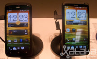Comparativa de tamaño entre el HTC One S y el HTC One X.
En Xataka | HTC One X, primeras impresiones (con vídeo)
Wed, 29 Feb 2012 15:15:39 GMT
iPad 3, a una semana vista
iPad 3, a una semana vista
Apple decidió ayer que quería su protagonismo en el MWC 2012. Personalmente me pareció que anunciar que presentarán el iPad 3 la semana que viene en el justo momento en que Google iba a tener su momento en Barcelona fue un poco … ¿casualidad? Sea como fuere ya sabemos que la semana que viene el tablet líder de lejos del mercado tendrá renovación. ¿Qué podemos esperar del iPad 3? La pantalla será de nuevo el elemento más importante ¿Qué mejorarías del iPad 2? Sin rivales todavía en el mercado, Apple tiene por delante con el iPad 3 acertar con la mejora a aplicar. Descartado el rediseño agresivo, la pantalla es lo más “sencillo” y lo más lógico de tocar. Además, para mi es el elemento clave tras el sistema operativo. Desde prácticamente la salida del iPad 2 se ha venido insistiendo en que tarde o temprano iba a llegar la llamada pantalla Retina Display para el tablet de Apple. Con el tablet ASUS Transformer Infinity luciendo una pantalla de 1920×1200 píxeles de tipo IPS+ y brillo de 600 bits, es de esperar que el iPad 3 la supere. Mejoras inevitables Si llega la pantalla con más resolución, el procesador vuelve a verse obligado a renovarse. Los rivales con Android ya apuestan por el cuádruple núcleo de la mano de Nvidia o Qualcomm, así que no hay que esforzarse mucho para pensar que Apple también le dará un brio a ese apartado de su tablet. Por último, la conectividad LTE podría llegar con el objetivo de hacer más importante la conectividad de banda ancha en todo momento en el futuro iPad 3. La semana que viene a estas horas ya habremos salido de dudas. No os perdáis por cierto la estupenda recreación de lo que podría ser el iPad 3 de los chicos de Aatma Studio, porque tiene pinta de convertirse en una leyenda urbana tal y como pasó con el iPhone 5 y su teclado holográfico:

Apple decidió ayer que quería su protagonismo en el MWC 2012. Personalmente me pareció que anunciar que presentarán el iPad 3 la semana que viene en el justo momento en que Google iba a tener su momento en Barcelona fue un poco … ¿casualidad?
Sea como fuere ya sabemos que la semana que viene el tablet líder de lejos del mercado tendrá renovación.
¿Qué podemos esperar del iPad 3?
La pantalla será de nuevo el elemento más importante
¿Qué mejorarías del iPad 2? Sin rivales todavía en el mercado, Apple tiene por delante con el iPad 3 acertar con la mejora a aplicar. Descartado el rediseño agresivo, la pantalla es lo más “sencillo” y lo más lógico de tocar. Además, para mi es el elemento clave tras el sistema operativo.
Desde prácticamente la salida del iPad 2 se ha venido insistiendo en que tarde o temprano iba a llegar la llamada pantalla Retina Display para el tablet de Apple.
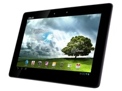
Con el tablet ASUS Transformer Infinity luciendo una pantalla de 1920×1200 píxeles de tipo IPS+ y brillo de 600 bits, es de esperar que el iPad 3 la supere.
Mejoras inevitables
Si llega la pantalla con más resolución, el procesador vuelve a verse obligado a renovarse. Los rivales con Android ya apuestan por el cuádruple núcleo de la mano de Nvidia o Qualcomm, así que no hay que esforzarse mucho para pensar que Apple también le dará un brio a ese apartado de su tablet.
Por último, la conectividad LTE podría llegar con el objetivo de hacer más importante la conectividad de banda ancha en todo momento en el futuro iPad 3. La semana que viene a estas horas ya habremos salido de dudas.
No os perdáis por cierto la estupenda recreación de lo que podría ser el iPad 3 de los chicos de Aatma Studio, porque tiene pinta de convertirse en una leyenda urbana tal y como pasó con el iPhone 5 y su teclado holográfico:
Wed, 29 Feb 2012 13:43:34 GMT
Windows 8, ya te puedes descargar la versión beta
Windows 8, ya te puedes descargar la versión beta
Como sabes estamos en directo en la presentación de la versión Consumer Preview de Windows 8 en Barcelona. Lo puedes seguir en nuestra página de directo o en Twitter. El lanzamiento de Windows 8 Consumer Preview es oficial y de hecho ya te lo puedes descargar desde la web de Microsoft. Pronto todas las novedades de esta versión.

Como sabes estamos en directo en la presentación de la versión Consumer Preview de Windows 8 en Barcelona. Lo puedes seguir en nuestra página de directo o en Twitter.
El lanzamiento de Windows 8 Consumer Preview es oficial y de hecho ya te lo puedes descargar desde la web de Microsoft. Pronto todas las novedades de esta versión.
Wed, 29 Feb 2012 13:20:41 GMT
Sony LiveView 2. Toma de contacto
Sony LiveView 2. Toma de contacto
Tras la experiencia del reloj acompañante Sony Ericsson LiveView, la compañía ha mejorado un buen número de detalles en el Sony LiveView 2, segunda versión de este dispositivo pensado para que no tengamos que sacar tanto nuestro Smartphone del bolsillo y también conocido como Sony SmartWatch. Equipado con una pequeña pantalla táctil, el LiveView 2 se sincroniza automáticamente con hasta 255 aplicaciones Android que lo soporten en su código y recibe información y actualizaciones de las mismas mediante Bluetooth. Mucho más pequeño y ligero que el LiveView original, el SmartWatch tiene también más autonomía, hasta 4 días en uso. La carga, curiosamente, no se hace desde MicroUSB sino desde una conexión propietaria de tres pines en su base. Una de las principales novedades del LiveView 2 es su capacidad para servir de mando a distancia para la cámara de los Xperia NXT, permitiéndonos tomar fotos controlando la aplicación desde el dispositivo, aunque no con todas sus opciones. El LiveView2 acompañará a los Xperia NXT en su lanzamiento a un precio de 129 euros, aunque es probable que Sony ponga en marcha alguna oferta de lanzamiento al respecto según nos informan en el stand de la compañía nipona. El LiveView 2 ha mejorado mucho sobre la primera versión, aunque aún tiene detalles que pulir, como la pantalla que tiene muy poca luminosidad y eso hace que sea complicado leerla bajo condiciones de mucha luz. Por lo demás, la autonomía es ahora ya bastante aceptable y queda por ver si la compatibilidad con aplicaciones será muy reducida o no. Más información | Sony

Tras la experiencia del reloj acompañante Sony Ericsson LiveView, la compañía ha mejorado un buen número de detalles en el Sony LiveView 2, segunda versión de este dispositivo pensado para que no tengamos que sacar tanto nuestro Smartphone del bolsillo y también conocido como Sony SmartWatch.
Equipado con una pequeña pantalla táctil, el LiveView 2 se sincroniza automáticamente con hasta 255 aplicaciones Android que lo soporten en su código y recibe información y actualizaciones de las mismas mediante Bluetooth.
Mucho más pequeño y ligero que el LiveView original, el SmartWatch tiene también más autonomía, hasta 4 días en uso. La carga, curiosamente, no se hace desde MicroUSB sino desde una conexión propietaria de tres pines en su base.

Una de las principales novedades del LiveView 2 es su capacidad para servir de mando a distancia para la cámara de los Xperia NXT, permitiéndonos tomar fotos controlando la aplicación desde el dispositivo, aunque no con todas sus opciones.

El LiveView2 acompañará a los Xperia NXT en su lanzamiento a un precio de 129 euros, aunque es probable que Sony ponga en marcha alguna oferta de lanzamiento al respecto según nos informan en el stand de la compañía nipona.
El LiveView 2 ha mejorado mucho sobre la primera versión, aunque aún tiene detalles que pulir, como la pantalla que tiene muy poca luminosidad y eso hace que sea complicado leerla bajo condiciones de mucha luz. Por lo demás, la autonomía es ahora ya bastante aceptable y queda por ver si la compatibilidad con aplicaciones será muy reducida o no.
Más información | Sony
Wed, 29 Feb 2012 10:15:00 GMT
ViewPhone 4s y 5e, los nuevos teléfonos ICS de ViewSonic
ViewPhone 4s y 5e, los nuevos teléfonos ICS de ViewSonic
ViewSonic no solo se ha traído tablets a este MWC 2012. Los teléfonos con Android 4.0 también son numerosos en su stand. Te adelantamos lo que ofrecerán este año. Los dos modelos más interesantes son el ViewPhone 4s y el ViewPhone 5e, el cual se suma a la moda de teléfonos con pantalla táctil de 5 pulgadas. ViewPhone 4s, ICS en un dualSIM El ViewPhone 4s es un nuevo teléfono avanzado con pantalla de 3.5 pulgadas, es decir, compacto para lo que se ve hoy en día, y cuyas dos características más reseñables son el sistema operativo con el que sale al mercado, Android ICS, y que es un terminal con doble SIM. De este nuevo teléfono debes conocer también que su pantalla es de tipo IPS con resolución de 960×640 píxeles que nos da una densidad de píxeles de 326 ppp. El brillo de la misma es muy alto, con 500 nits, y el contraste, de 800:1. En el apartado de la cámara hay que citar su principal de 5 megapíxeles. El precio de este Viewphone 4S será de 384 euros con salida para el segundo trimestre del año. Os daremos más detalles cuando se anuncie su disponibilidad en España. ViewPhone 5e, otro con pantalla gigante ViewSonic también se une a la corriente de los teléfonos con grandes diagonales y el ViewPhone 5e es su apuesta. La pantalla de este smartphone es de 5 pulgadas, con resolución de 800×480. Viene también con Android 4.0 y es DualSIM, como el 4s. Su precio recomendado es de 460 euros, y tiene claro enfoque profesional. Se lanzará en Europa en el tercer trimestre del año. ViewPhone 4e se apunta a la gama de entrada Además de smartphone de gama alta, ViewSonic toca el tipo de teléfonos que se está haciendo muy popular: los gama de entrada. Su propuesta se llama ViewPhone 4e, tiene pantalla de 3.5 pulgadas, resolución HVGA y cámara de fotos de foco fijo de 3 MP. Su procesador es un sencillo chip de 650 MHz. Lo que nos parece interesante de este teléfono es su diseño, de una sola pieza y con grosor de 10.3 mm, y que sea DualSIM. Pero el precio, de 307 euros, no nos llama tanto la atención pues modelos del mismo fabricante con mejores prestaciones cuestan apenas un poco más. Sale a la venta en el segundo trimestre. ViewPhone 3, el más básico El ViewPhone 3 es todavía un teléfono más básico. ViewSonic mantiene su idea de la doble tarjeta SIM y la acompaña de una pantalla de 3.5 pulgadas funcionando bajo Android 2.3 y con procesador Qualcomm de 800 GHz. Cuenta con cámara de 5 megapíxeles . Su precio será de 215 euros y la salida es inminente.
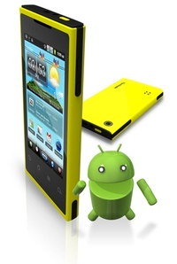
ViewSonic no solo se ha traído tablets a este MWC 2012. Los teléfonos con Android 4.0 también son numerosos en su stand. Te adelantamos lo que ofrecerán este año.
Los dos modelos más interesantes son el ViewPhone 4s y el ViewPhone 5e, el cual se suma a la moda de teléfonos con pantalla táctil de 5 pulgadas.
ViewPhone 4s, ICS en un dualSIM
El ViewPhone 4s es un nuevo teléfono avanzado con pantalla de 3.5 pulgadas, es decir, compacto para lo que se ve hoy en día, y cuyas dos características más reseñables son el sistema operativo con el que sale al mercado, Android ICS, y que es un terminal con doble SIM.
De este nuevo teléfono debes conocer también que su pantalla es de tipo IPS con resolución de 960×640 píxeles que nos da una densidad de píxeles de 326 ppp. El brillo de la misma es muy alto, con 500 nits, y el contraste, de 800:1.
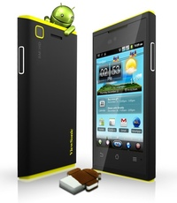
En el apartado de la cámara hay que citar su principal de 5 megapíxeles. El precio de este Viewphone 4S será de 384 euros con salida para el segundo trimestre del año. Os daremos más detalles cuando se anuncie su disponibilidad en España.
ViewPhone 5e, otro con pantalla gigante
ViewSonic también se une a la corriente de los teléfonos con grandes diagonales y el ViewPhone 5e es su apuesta.
La pantalla de este smartphone es de 5 pulgadas, con resolución de 800×480. Viene también con Android 4.0 y es DualSIM, como el 4s.
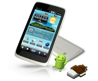
Su precio recomendado es de 460 euros, y tiene claro enfoque profesional. Se lanzará en Europa en el tercer trimestre del año.
ViewPhone 4e se apunta a la gama de entrada
Además de smartphone de gama alta, ViewSonic toca el tipo de teléfonos que se está haciendo muy popular: los gama de entrada.
Su propuesta se llama ViewPhone 4e, tiene pantalla de 3.5 pulgadas, resolución HVGA y cámara de fotos de foco fijo de 3 MP. Su procesador es un sencillo chip de 650 MHz.
Lo que nos parece interesante de este teléfono es su diseño, de una sola pieza y con grosor de 10.3 mm, y que sea DualSIM. Pero el precio, de 307 euros, no nos llama tanto la atención pues modelos del mismo fabricante con mejores prestaciones cuestan apenas un poco más. Sale a la venta en el segundo trimestre.
ViewPhone 3, el más básico
El ViewPhone 3 es todavía un teléfono más básico. ViewSonic mantiene su idea de la doble tarjeta SIM y la acompaña de una pantalla de 3.5 pulgadas funcionando bajo Android 2.3 y con procesador Qualcomm de 800 GHz. Cuenta con cámara de 5 megapíxeles .
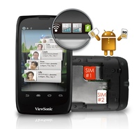
Su precio será de 215 euros y la salida es inminente.
Wed, 29 Feb 2012 08:23:00 GMT
Panasonic Eluga bajo el agua, te lo enseñamos en vídeo
Panasonic Eluga bajo el agua, te lo enseñamos en vídeo
El reencuentro de Panasonic con Europa no podía haber sido mejor. El Panasonic Eluga no pasa desapercibido para nadie ni por su diseño ni por ofrecer una resistencia que no es habitual ver en un teléfono de gama alta. En el vídeo que os ofrecemos a continuación, el Panasonic Eluga enseña sus dos armas principales: pantalla y posibilidad de ser sumergido en agua hasta una hora. Pasen y vean.

El reencuentro de Panasonic con Europa no podía haber sido mejor. El Panasonic Eluga no pasa desapercibido para nadie ni por su diseño ni por ofrecer una resistencia que no es habitual ver en un teléfono de gama alta.
En el vídeo que os ofrecemos a continuación, el Panasonic Eluga enseña sus dos armas principales: pantalla y posibilidad de ser sumergido en agua hasta una hora. Pasen y vean.
Wed, 29 Feb 2012 07:33:00 GMT
ASUS Padfone, te enseñamos cómo es en vídeo
ASUS Padfone, te enseñamos cómo es en vídeo
El ASUS Padfone está siendo para mi uno de los teléfonos de este MWC 2012. No tiene el cuádruple núcleo que parece que tiene que ser una obligación pero sí que es parte de la idea de teléfono del futuro que muchos tenemos en mente. En este vídeo puedes ver al ASUS Padfone en todo su esplendor: como teléfono, como tablet y también como portátil. Ahora solo queda esperar al precio de este deseado gadget.
%2022.15.20.jpg)
El ASUS Padfone está siendo para mi uno de los teléfonos de este MWC 2012. No tiene el cuádruple núcleo que parece que tiene que ser una obligación pero sí que es parte de la idea de teléfono del futuro que muchos tenemos en mente.
En este vídeo puedes ver al ASUS Padfone en todo su esplendor: como teléfono, como tablet y también como portátil. Ahora solo queda esperar al precio de este deseado gadget.
Wed, 29 Feb 2012 05:30:00 GMT
ViewPad G70, E70, E100 y P100, las nuevas apuestas de ViewSonic
ViewPad G70, E70, E100 y P100, las nuevas apuestas de ViewSonic
ViewSonic está aprovechando el MWC 2012 para presentar a la sociedad europea sus nuevos modelos para este 2012, ampliando así el catálogo de tablet con Android y Windows 7 de los que ya disponen en nuestro país. Los nuevos tablets son cuatro: Viewpad G70, E70, E100 y P100. Los tres primeros son tablets con Android 4.0 e incluyen la interfaz ViewScene 3D, mientras que el ViewPad P100 apuesta por Windows 7 como sistema operativo. ViewPad G70 y E70 apuestan por las siete pulgadas ViewSonic es seguramente de las marcas que más apuestan por el formato de tablet con siete pulgadas. Sus dos modelos ViewPad G70 y E70 tienen esa diagonal, con resolución de 1024×600 píxeles. El modelo Viewpad G70 es un modelo 3G con 1 GB de memoria RAM, almacenamiento de 4 GB ampliable y cámara de 2 megapíxeles. En cuanto a la Viewpad E70, su procesador es de un núcleo a 1 GHz, es solo WiFi y la memoria interna se limita a 4 GB, eso sí, ampliable con tarjetas microSD. La ViewPad G70 llega este trimestre a Europa con un precio de 300 euros. Por su parte, el Viewpad E70 lo hará por 153 euros. Viewpad E100 y P100, Android y Windows 7 en 10 pulgadas De los dos tablets con pantalla de 10 pulgadas ViewSonic ofrece un modelo con Androdi 4.0 y otro con Windows 7. El Viewpad E100 tiene una pantalla IPS con resolución de 1024×768 píxeles, procesador Cortex a 1 GHz y grosor de solo 9.1 mm. Su preso es de 620 gramos. Es un tablet WiFi, con bluetooth 3.0, HDMI y USB. Habrá versión 3G. El precio del modelo solo WiFi será de 307 euros, mientras que el 3G nos saldría por 384 euros. Por su parte, el Viewpad P100 con Windows 7 cuenta con panel IPS de 1280×800 píxeles, procesador Intel N2600 a 1.6 Ghz y doble núcleo, y un precio de 615 euros con WiFi y 768 euros con 3G integrado. Más información | ViewSonic.
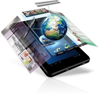
ViewSonic está aprovechando el MWC 2012 para presentar a la sociedad europea sus nuevos modelos para este 2012, ampliando así el catálogo de tablet con Android y Windows 7 de los que ya disponen en nuestro país.
Los nuevos tablets son cuatro: Viewpad G70, E70, E100 y P100. Los tres primeros son tablets con Android 4.0 e incluyen la interfaz ViewScene 3D, mientras que el ViewPad P100 apuesta por Windows 7 como sistema operativo.
ViewPad G70 y E70 apuestan por las siete pulgadas
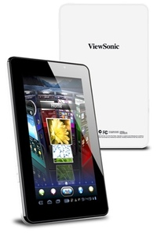
ViewSonic es seguramente de las marcas que más apuestan por el formato de tablet con siete pulgadas. Sus dos modelos ViewPad G70 y E70 tienen esa diagonal, con resolución de 1024×600 píxeles.
El modelo Viewpad G70 es un modelo 3G con 1 GB de memoria RAM, almacenamiento de 4 GB ampliable y cámara de 2 megapíxeles.
En cuanto a la Viewpad E70, su procesador es de un núcleo a 1 GHz, es solo WiFi y la memoria interna se limita a 4 GB, eso sí, ampliable con tarjetas microSD.
La ViewPad G70 llega este trimestre a Europa con un precio de 300 euros. Por su parte, el Viewpad E70 lo hará por 153 euros.
Viewpad E100 y P100, Android y Windows 7 en 10 pulgadas
De los dos tablets con pantalla de 10 pulgadas ViewSonic ofrece un modelo con Androdi 4.0 y otro con Windows 7.
El Viewpad E100 tiene una pantalla IPS con resolución de 1024×768 píxeles, procesador Cortex a 1 GHz y grosor de solo 9.1 mm. Su preso es de 620 gramos. Es un tablet WiFi, con bluetooth 3.0, HDMI y USB. Habrá versión 3G. El precio del modelo solo WiFi será de 307 euros, mientras que el 3G nos saldría por 384 euros.
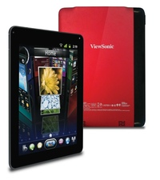
Por su parte, el Viewpad P100 con Windows 7 cuenta con panel IPS de 1280×800 píxeles, procesador Intel N2600 a 1.6 Ghz y doble núcleo, y un precio de 615 euros con WiFi y 768 euros con 3G integrado.
Más información | ViewSonic.